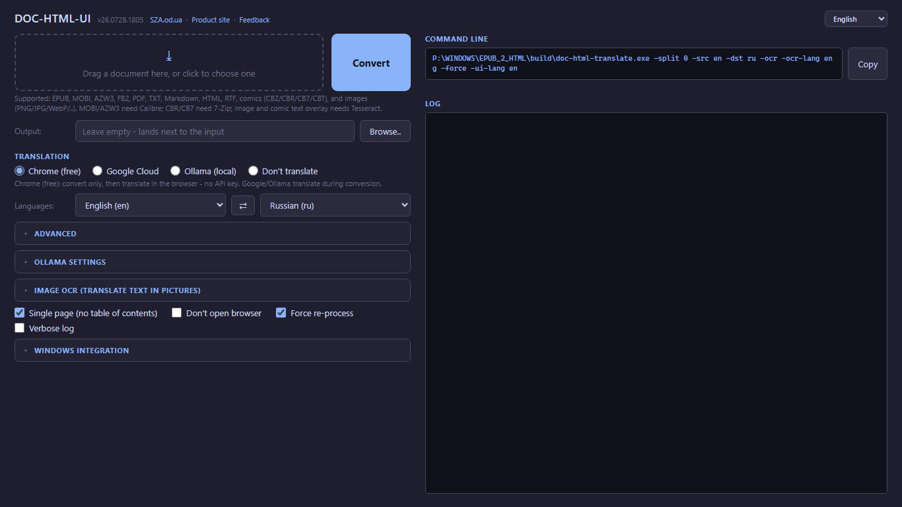
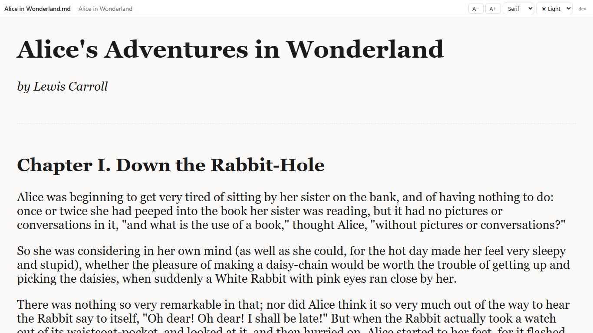
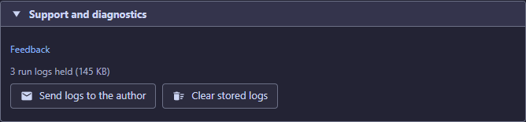
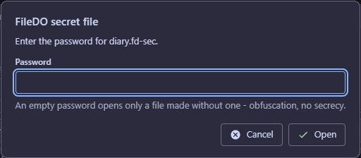

Fast local book reading with free Chrome translation
Convert EPUB/PDF and other formats into local HTML pages, then read in Chrome and translate to your language using built-in browser translation. No API key, no subscription, no ceremony required.
Doc-HTML-Translate comes in several forms; they share the same converter and the same "hand the browser clean HTML, let it translate" idea. Pick whichever fits.
Desktop app - two programs on one converter: doc-html-translate.exe, the command-line converter and Windows file-association handler (this page documents its flags), and doc-html-ui.exe, a windowed front-end that exposes every flag below, with a file picker, drag & drop and a default-handler toggle (opt-in, off by default).
Microsoft Store app - the same desktop app (GUI + CLI) shipped as an auto-updating, Store-signed MSIX: Microsoft Store.
Browser extension - re-renders documents (PDF, EPUB, MOBI, AZW3, FB2, RTF, TXT, Markdown, HTML, CBZ/CBT comics) as clean HTML right in the browser so the built-in Translate page works on them, no app install needed: Chrome Web Store · Edge Add-ons · extension page.
Convert a book and read it translated, free
Turn a document into a local HTML book, open it in Chrome and let Chrome's own page translation do the rest. You end up reading the book in your language, with its table of contents and navigation intact, and with no API key and no paid call on the way.
Available in
Desktop appMicrosoft Store app
You need
Windows, and Chrome with its built-in Translate page. The Browser extension reaches the same result inside the browser, with no app.
Open doc-html-ui, drop the file on its window and press Convert. Prefer the command line? Run one of these instead:

Step 1 - drop the file on the app window and press Convert.
doc-html-translate.exe "book.epub"
# or doc-html-translate.exe "book.pdf"
The converted book opens in the browser by itself (unless -noopen is set).

Step 2 - the converted book opens in the browser.
In the browser's own menu choose Translate page and pick your language.
Result
The book reads in your language in the browser. The converted pages are a folder next to the source file (or in the folder you chose), so you can open them again without converting.
Build the command-line converter and run it with a translation engine
Build doc-html-translate.exe from source, then run it from a terminal in the mode you want. You end up with a converted book, translated during conversion if you chose an engine.
Available in
Desktop app
You need
Go, to build from source (a downloaded release needs nothing). -google needs a saved Google Cloud Translation API key; -ollama needs a running local Ollama service with the model you chose.
Build it. Skip this step if you downloaded a release.
go build -tags nodynamic -o build/doc-html-translate.exe ./cmd/doc-html-translate
Run it with the mode you want. A plain conversion is the command of the recommended workflow; these add a flag:
Also comic archives (CBZ / CBR / CB7 / CBT): a container of page images with no text layer, opened page by page with OCR forced on, so the speech-bubble text is recognized and laid over each page as translatable plates. CBZ and CBT need nothing extra; CBR and CB7 require 7-Zip installed (the same external-tool pattern as MOBI needing Calibre).
Also a standalone image (PNG, JPG, JPEG, WebP, GIF, BMP, TIFF, JPEG XL (.jxl)): the app OCRs it and lays translatable text plates over the picture, so Chrome/Edge page translation works on it in place - the same overlay the browser extension produces. Needs the Tesseract OCR engine (see -ocr-lang).
JPEG XL (.jxl) pictures are decoded locally with the bundled codec into PNG before display and OCR, including pictures inside books and comics. Transparency is preserved; animated JPEG XL uses its first displayed frame. No additional image program or browser codec is needed.
MOBI and AZW3: requires Calibre installed. CBR and CB7 comics: require 7-Zip installed (CBZ and CBT need nothing extra). DRM-protected files are not supported - the converter respects locks it cannot pick.
Plain-text (.txt) input is decoded by sniffing its bytes - a UTF-8/UTF-16 byte-order mark, then valid UTF-8, then a legacy Cyrillic code page (Windows-1251, KOI8-R, CP866) by detection - so a DOS-era or Notepad "Unicode" .txt reads as text, not mojibake. An unreadable binary (a .docx, .djvu, or a comic archive with no 7-Zip) is refused with a named format instead of being turned into a garbage document.
02
Reading Experience
The generated HTML carries a small, fully client-side reader layer - no server to babysit, works happily on file://:
Reading themes - a toggle in the navbar (and on index.html) cycles Light / Sepia / Dark / Night. Your choice is stored in localStorage and applied on every page.
Reading position - your scroll is saved per book, so the app remembers where you stopped even when you don't. index.html shows a "Continue reading" link to the last page you were on, and the navbar carries a thin progress bar across the whole book - one that reads as a percentage on hover or keyboard focus.
Reading comfort - line spacing and column width are selects in the same navbar, remembered with your theme and applied only once you pick one. A night-mode button swaps the light and dark themes in one click, a reset button returns the text size to its default, and the arrow keys and space bar turn pages at the scroll edges, just like PageUp/PageDown. Comics and scanned pages gain a per-session Fit width mode, so a page fills the window without hand-tuning a percentage.
Search - the navbar's search panel finds a phrase on this page or across the whole book, and Ctrl+F opens it with the field focused (pressed again inside the field, it gives way to the browser's own find bar); multi-page output ships a local text index, so whole-book search works on file://. Results list context lines and the chosen match is highlighted; recognized OCR text over images is searchable where recognition produced it - image-only pages have no text to match.
Spending guard - for paid engines, -max-cost N turns the cost estimate (chars / 1e6 * $20) into a hard pre-flight limit: if the estimate exceeds N, translation is skipped and the book is still produced untranslated.
Single-page documents keep a continuous reading view and show a compact contents panel when authored navigation, PDF bookmarks, or headings are available.
03
Optional External Tools
The app works out of the box for EPUB, TXT, FB2, RTF, HTML, Markdown. The tools below are strictly optional - install them only if you want full PDF image support and the extra formats.
Tool
Purpose
Needed for
How to install
pdftotext (Xpdf / Poppler)
High-quality PDF text extraction - handles complex fonts, ligatures, multi-column layout better than the built-in library
PDF files - optional, built-in fallback used when absent
Without pdftotext: built-in Go PDF reader is used (slightly lower quality). Without ffmpeg: JPEG2000 images in PDFs will not be visible in the browser. Without Calibre: MOBI/AZW3 files cannot be opened. Without 7-Zip: CBR/CB7 comics cannot be opened.
04
Main Flags
All optional. The defaults are sensible, so you can ignore this whole table until you have an opinion.
Flag
Default
Description
-notranslate
false
Convert only, skip translation
-noopen
false
Do not auto-open browser
-google
false
Google Cloud Translation API (needs a saved API key; paid, so see -max-cost)
-ollama
false
Local Ollama translation (needs a running local Ollama service with the chosen model)
-free
false
Alias of -ollama
-ollama-model
gemma3:12b
Ollama model name
-ollama-parallel
1
Parallel batch requests
-ollama-ctx
8192
Ollama context size
-ocr
false
OCR text inside document images and overlay it as translatable HTML (needs Tesseract)
-ocr-lang
(-src)
OCR language(s), e.g. eng or eng+rus. Left empty it defaults from -src (else eng), and the app then checks the writing system on the page: where the data for it is installed the language is added rather than replaced (rus+eng), and where it is not the page gets no text plates and a line naming the pack to install. Pass this flag and that check never runs
-ocr-langs
false
List installed/available OCR languages and exit
-ocr-download
empty
Download an OCR language pack (e.g. -ocr-download rus) and exit
-max-cost
0
Abort paid translation before sending if the estimated cost in USD exceeds N. When in doubt, 0 (no limit) is a perfectly respectable choice
-split
5000
Split pages at N chars, 0 disables split
-toc-depth
0
Table-of-contents nesting depth on index.html, 0 = unlimited, 1 = chapters only
-multipage
false
Produce multiple HTML pages with a table of contents instead of the default single page
-folder
empty
Custom output parent folder
-src
en
Source language
-dst
ru
Target language
-ui-lang
(system)
Interface language: en ru uk de it es fr pt ar hi bn ur zh. Empty follows the Windows language
-force
false
Rebuild even if output exists
-register
false
Opt in to becoming the default handler for EPUB, PDF and other supported files (off by default; also the default-handler toggle in the doc-html-ui app). The first run asks, and writes nothing without a yes.
-unregister
false
Release the default-handler association (keeps the "Convert to HTML" right-click entry and "Open with").
-register-openwith
false
Add the app to the Windows "Open with" list and the "Convert to HTML" right-click menu, without making it the default handler. The doc-html-ui app offers the same as a toggle under "Windows integration" and on its first-run question; it never adds it on its own.
-report
false
Pack the recent run logs plus an environment summary into an archive for the author, print where it landed, and exit
-fdsec-password-env
(empty)
For a FileDO secret file (.fd-sec): the name of an environment variable that holds its password, for unattended runs - never the password itself. The console and the app window ask for the password instead.
-v
false
Verbose output
-version
false
Print version and exit
Every option above is also available in the doc-html-ui graphical app - file picker, drag & drop, TOC depth, spending guard and a default-handler toggle (opt-in, off by default; the app always adds the "Convert to HTML" right-click entry). On the Microsoft Store build the GUI is the launchable entry point, while double-clicking a file still runs the command-line converter.
During conversion, the GUI shows the current stage beside Convert and Cancel. It shows page or image counts when known, without guessing a percentage or remaining time. The log retains details, and the final status distinguishes reuse, warnings, cancellation and failure.
05
Send the logs of a failed conversion to the author
When a conversion goes wrong, a description from memory is rarely enough to reproduce it. The app keeps its recent run logs on disk - up to 20 runs or 20 MB, oldest trimmed first - so you can pack them into one archive for the author, even an hour later or after a crash.
Available in
Desktop appMicrosoft Store appBrowser extension
You need
A mail program, for the pre-addressed message. The Browser extension has no log store and copies a short summary instead (see below).
Open the About page of the doc-html-ui app, its Support and diagnostics group, and press Send logs to the author. One press builds a single archive, opens its folder with the file selected, copies its path to the clipboard and opens a pre-addressed message in your own mail program.

The Support and diagnostics group of the About page. Open the archive appears beside Send logs to the author once an archive exists.
Attach the archive to that message and press Send. The app never sends anything itself.
The archive is written to %LOCALAPPDATA%\doc-html-translate\reports\ and contains exactly four things:
environment.txt - the facts a program can read, one KEY=value line each: a schema version, the version, edition, platform, interface language, whether Tesseract was found and which OCR languages are installed, and the default Ollama model, plus a logs_left_out line with their number when the size limit kept some run logs out of the archive. Always English, so the author reads one format.
report.txt - the same facts as labelled lines, for a person to read.
settings.json - the settings that shaped the last run, without your output folder and your list of recent documents.
logs/ - the recent run logs, newest first. A log the size limit left out keeps its file name, and its text is one line saying how large it was. The log of a single run is capped at 5 MB: a longer run keeps its start and its end, and one line says how much of the middle was cut.
Everything in it is redacted first: anything shaped like a key, token, password or Google API key becomes <redacted>, and your own folders collapse to %USERPROFILE% and %LOCALAPPDATA%. The names and titles of your documents never travel - a file name or a title becomes <document> and only the format stays, so if the book matters, say which one in your message. Your Google API key is never in the archive; an automated test fails the build if it could be. The archive is capped at 15 MB, dropping the oldest logs first and telling you how many were left out.
Nothing is ever sent automatically. The app opens no network connection for this; it hands you a file and an unsent message, you attach the archive and press Send. Use Open the archive in the same section to look inside first, and Clear stored logs if you would rather keep no run history on disk at all.
On the command line, -report builds the same archive and prints where it landed.
The Browser extension has no log store to archive, so it offers the equivalent it can honestly give: a Copy diagnostics button in the About block of its options page. It copies one JSON block to the clipboard, ready to paste into a mail: a schema version, extension version, browser, interface language, your option set, and the format, page count and last error of the most recent document, with the same facts as English lines inside it. Save diagnostics as a file writes the same block. It carries no document text and no list of your sites.
Result
You hold one redacted archive, 15 MB at most, and an unsent message to the author. Nothing has left your PC until you press Send.
Open a FileDO secret file (.fd-sec) and convert what is inside
A .fd-sec file is a FileDO secret file. The app asks for its password, decrypts it with the FileDO installed on your PC, and converts the document or picture inside as it would convert the original. You end up with an ordinary HTML book beside your documents.
Available in
Desktop appMicrosoft Store app
You need
FileDO installed on your PC (winget install SerZhyAle.FileDO, the Microsoft Store, or the FileDO setup or portable build), and the file's password. The Browser extension does not open secret files.
Open it like any other document: from the command line, by picking or dropping it in the window, from the queue or the recent list, or with the right-click Convert to HTML entry. Nothing in the bytes says what is inside, so the app only suspects a secret file. First, before asking anything, it decides whether the result is already finished (an unchanged file is reopened with no password at all), whether FileDO is installed and whether the file's size fits the format.
Type the password in the masked field and press Open - once for a whole queue; a console asks without echo. An empty password opens only a file made without one: that is obfuscation, not secrecy.

The masked password question of a secret file.
The app then decrypts the file with the FileDO installed on your PC into one private folder under your temp folder, converts the document or picture inside exactly as it would convert the original, and removes the decrypted copy as soon as it has been read. A copy left by a crash is swept at the next start.
For unattended runs name an environment variable that holds the password: -fdsec-password-env NAME - a variable name, never the password itself.
Refused, each with its own message: a secret file that holds a folder, one that holds another secret file, one that holds a type this app does not convert, a wrong password (the message offers all three readings: wrong password, not a secret file, or altered), a damaged file, and a FileDO too old for the kind of secret file (update it).
Result
The result is named after the secret file and is not encrypted - it sits beside your documents like any other conversion. The password goes only to the local FileDO and is never stored, logged, sent anywhere or shown on a command line.
What the command line returns, which environment variables it reads and what it refuses - for scripts and unattended runs.
Exit codes
Code
Meaning
0
Done.
1
Bad arguments.
2
I/O error.
3
The document could not be parsed.
4
Translation failed, stopped part-way or could not start because the requested engine is unavailable - no Google key, Ollama not running. The book is still produced and opened, with the text left in the source language; a partial run says partially translated, N of M pages, and a segment the engine returned empty counts as untranslated.
130
Interrupted with Ctrl+C. The next run rebuilds the output.
Environment variables
Variable
What it does
DOCHT_TESSERACT
The full path to the Tesseract program for the OCR overlay. The app looks here first, then for a tesseract\tesseract.exe next to the app, then on PATH. If none is found, conversion still completes, without overlays, and logs a hint.
DOCHT_TOOL_TIMEOUT_SCALE
A multiplier for the deadlines of the external helpers (pdftotext, Tesseract, Calibre, 7-Zip, ffmpeg/ImageMagick), which grow with the input size. On a slow machine or an unusually heavy file, set DOCHT_TOOL_TIMEOUT_SCALE=3 allows three times as long.
DOCHT_FILEDO
The full path to FileDO for secret files (.fd-sec). It is used as given, instead of looking on PATH and in the install folders.
Input limits
The input must be a document file: a folder or a 0-byte file is refused before anything is written. A second conversion of the same output while one is running is refused rather than interleaved.
An image is decoded only when its header declares at most 100 megapixels and at most 32768 pixels per side: a larger TIFF is refused with a message naming the limit, and a larger picture on a page is still shown as is, with Tesseract reading it without plate colours or the rescue passes.
An archive (EPUB, CBZ, CBT, CBR, CB7) is checked from its listing before anything is unpacked: at most 20000 entries and 4 GB unpacked in total, else it is refused; a single file over 100 MB in an EPUB, or a comic page over 200 MB, is skipped with a warning naming it. CBR/CB7 are listed with 7-Zip first and only the accepted pages are unpacked. Symlinks inside an archive are never followed.
A TXT, Markdown, FB2, RTF or HTML document over 100 MB is refused before it is read, with a message naming the limit.
The browser extension applies the same archive and document limits.
The ownership record of an output folder
Every output folder carries a small hidden ownership record (.doc-html-translate.json). The converter only reuses, rebuilds (-force) or cleans up after a failure a folder that it created for that same document. A folder of your own that happens to share the book's name is never touched: the output then goes to a sibling such as book (pdf). The same happens when book.epub and book.pdf sit side by side, so each gets its own output.
Turn a document (EPUB, PDF, FB2, a comic archive, an image, ..) into a folder of local HTML pages with an index.html, navigation and a table of contents. The app's main job; nothing is uploaded.
Translate (page translation)
The free way to read in your language: open the converted index.html in Chrome or Edge and use the browser's own Translate page. Google Cloud and Ollama are optional engines that translate during conversion instead.
OCR overlay
Text that Tesseract recognized in a picture - a scan, a comic page, a standalone image - laid over it as translatable text plates, so page translation works on the picture in place.
Text plate
One block of the OCR overlay. It covers the letters it replaces; a button in the header hides every plate to show the picture underneath.
Desktop app
The Windows edition: doc-html-ui.exe (the window) and doc-html-translate.exe (the command line), portable or from the Microsoft Store.
CLI
The command-line converter doc-html-translate.exe. Every option is a flag listed under Main Flags.
Browser extension
The Chromium edition from the Chrome Web Store and Edge Add-ons: it converts a document right in a browser tab, without the desktop app.
Microsoft Store app
The desktop app as a Store-signed, auto-updating MSIX package.
Default handler
The program Windows starts when you double-click a file. The app becomes one for EPUB, PDF and the other supported files only when you opt in.
Table of contents (TOC)
The multi-level list of chapters on index.html, built from the book's own structure.
Spending guard
A cost limit for the paid translation engines: above it, translation is skipped and the book is still produced.
Tesseract
The open-source OCR engine the app calls for text in pictures; the OCR overlay needs it.
Window help - the pages the desktop window opens on F1 or its ? button
Interface languages
The interface of the application and the extension is available in 13 languages: en ru uk de it es fr pt ar hi bn ur zh. English, Russian and Ukrainian are author-proofread; the other ten are machine-translated and unproofread - corrections are welcome at sza@ukr.net.
Related tool
For individual images, scans, and media that you need to view or sort, use Fast Media Sorter & Sharing for Windows. It complements this tool rather than replacing it.